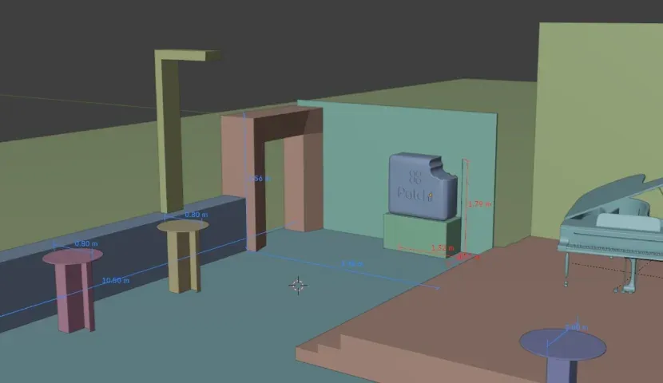
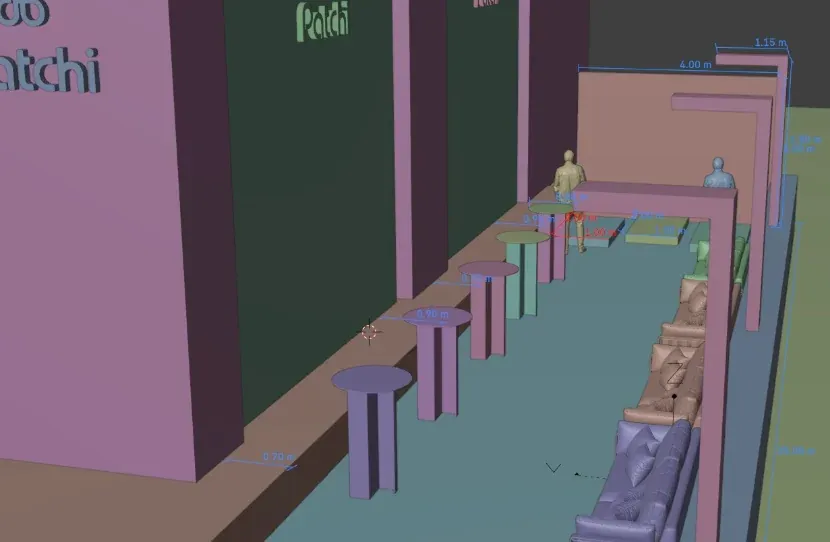
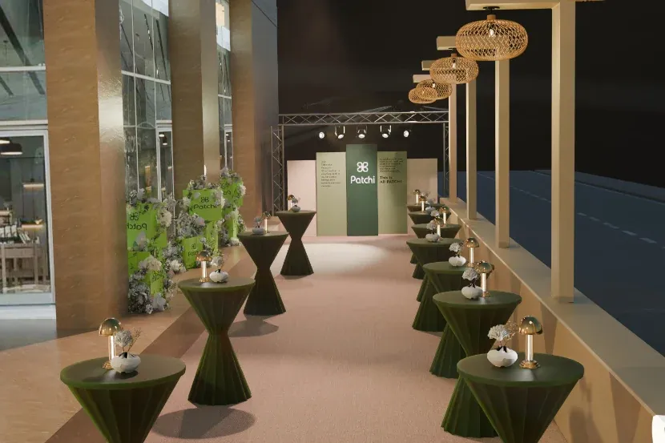
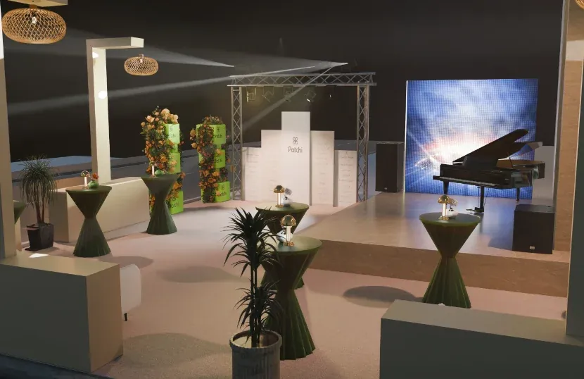
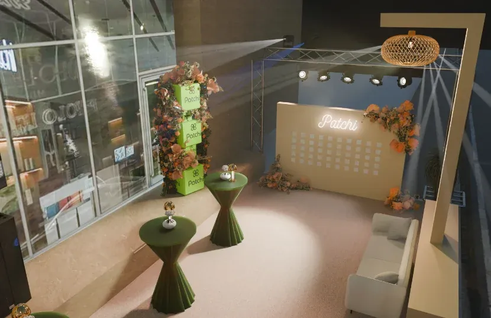
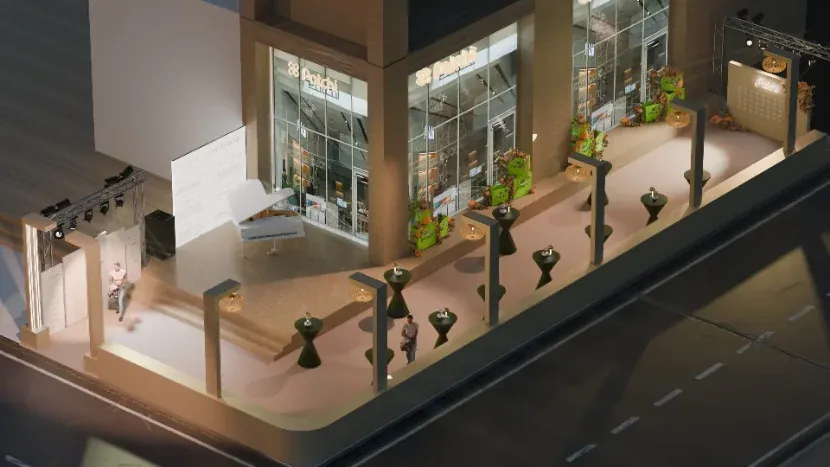

03 · Event visualization · Patchiتصور الفعاليات · باتشي
A Patchi event, previewed in 3Dفعالية باتشي، بتصور ثلاثي الأبعاد
An outdoor event in front of a Patchi store: an entrance frame, a cocktail area under pendant lights, flower towers, a photo wall, and a stage with a piano and an LED screen.فعالية خارجية أمام متجر باتشي: إطار للمدخل، ومنطقة ضيافة تحت إضاءة معلّقة، وأبراج ورد، وجدار تصوير، ومسرح عليه بيانو وشاشة LED.

The processخطوات العمل
-
01
Layout with real measurementsتوزيع بقياسات حقيقية
The space is blocked out first with simple shapes and dimensions — entrance, tables, stage, piano and photo wall — so every piece fits the site.تُوزَّع المساحة أولاً بأشكال بسيطة وأبعاد — المدخل والطاولات والمسرح والبيانو وجدار التصوير — حتى تتناسب كل قطعة مع الموقع.


-
02
Materials and lightالخامات والإضاءة
Then come the materials and light: wood frames, dark green high tables, rattan pendants, flower towers with Patchi boxes, and truss lighting.بعدها تأتي الخامات والإضاءة: إطارات خشبية، وطاولات عالية بالأخضر الداكن، وإضاءة معلّقة من الخيزران، وأبراج ورد بعلب باتشي، وإضاءة على هياكل التراس.

-
03
Stage and photo wallالمسرح وجدار التصوير
A stage with a grand piano and an LED screen, and a Patchi photo wall with a lounge for guests.مسرح عليه بيانو كبير وشاشة LED، وجدار تصوير لباتشي مع جلسة للضيوف.


-
04
The whole eventالفعالية كاملة
An aerial view shows how the whole event sits in front of the store.لقطة من الأعلى توضّح كيف تتوزع الفعالية كاملة أمام المتجر.

Let's build the shot.لنصنع المشهد.
Have a project in mind? Send the details by email or WhatsApp.لديك مشروع؟ أرسل التفاصيل عبر البريد أو واتساب.